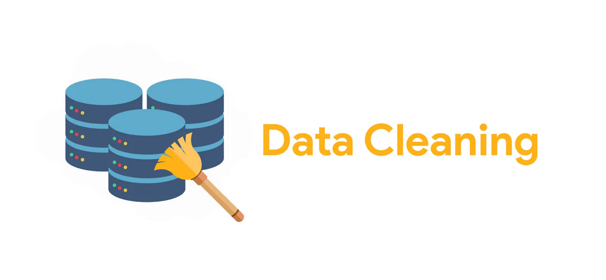
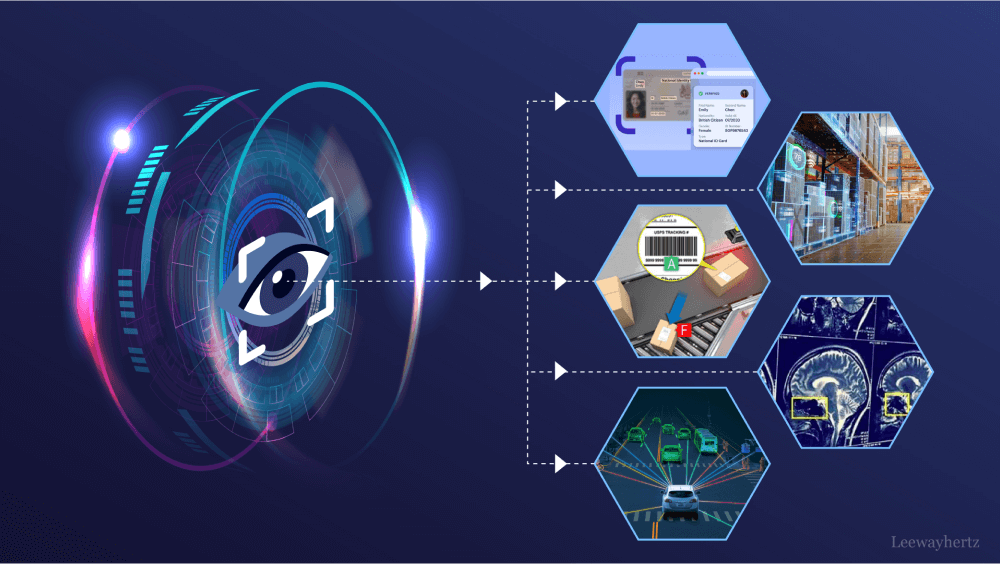
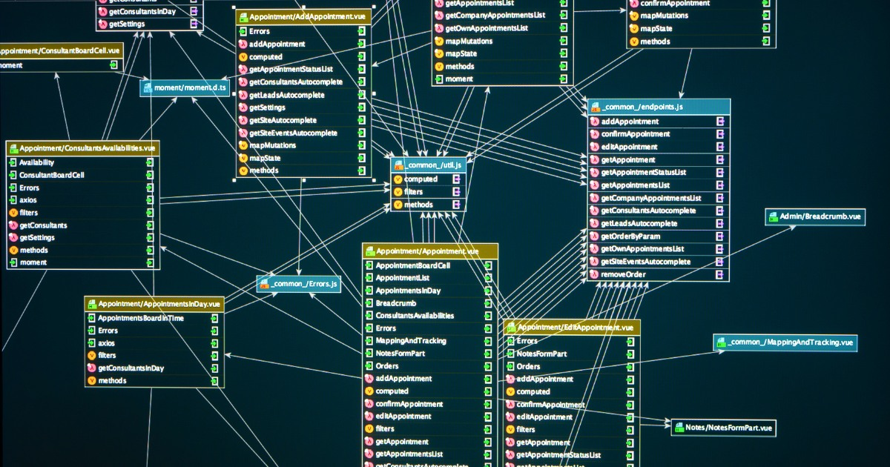

Dans ce projet, j'ai effectué un nettoyage complet de données pour préparer l'analyse en utilisant uniquement des bibliothèques Python standard. Nous avons mis en place des techniques de data cleaning pour garantir la qualité des données.

Dans le cadre de notre Open Data Camp, nous avons utilisé des techniques de computer vision pour analyser et interpréter les images. Entrainement en utilisant DiffusionDet.

De la conception à l'implémentation : Modélisation complète (Merise) du système, Implémentation du schéma en SQL (DDL) et peuplement des données. Stack : Python, PostgreSQL